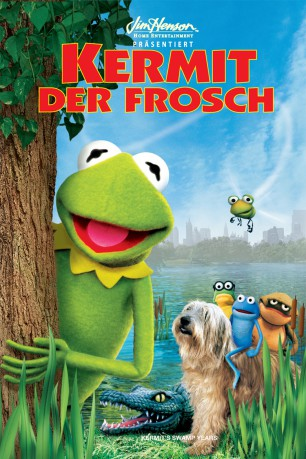

#7868 Kermit der Frosch
Alternativ: Kermit's Swamp Years
 
 IMDB-Wertung: 5.4 / 10
IMDB-Wertung: 5.4 / 10  Metascore: 0
Metascore: 0 
Der berühmteste Frosch der Welt, Kermit, erinnert sich selbst an seine Jugendzeit. Wie er sich mit seinen allerbesten Freunden Goggles und Croaker aufmachte, die Welt hinter dem Sumpf zu erkunden. Und dass die Welt dort draußen voller Gefahren war. Weil dort die Menschen leben ... und deren Pläne für kleine Frösche keineswegs ungefährlich sind! Am Anfang war alles einfach. Denn am Anfang war nur der Sumpf. Hier lebten der junge Kermit mit dem damals schon vorlauten Mundwerk und seine Freunde Goggles und Croaker lustig in den Tag hinein. Bis sie sich eines Tages fragten, ob es nicht außerhalb ihres schlammigen Paradieses spannende Abenteuer und neue Herausforderungen für sie geben würde und sie sich kurzentschlossen auf den Weg machten, das herauszufinden ...
Jahr: 2002
Dauer: 81 Minuten
FSK: 0
Land: USA Studio: Starz!Tonspuren:
Untertitel: Deutsch,
Auflösung: 1080p (1920x1080) Größe: 6707 MB
Genre: Komödie, Abenteuer, Fantasy, Familie
Regisseur: David Gumpel
Drehbuch: Jim Lewis
Soundtrack: Joe Carroll, Peter Thom
Darsteller:
 Steve Whitmire als Kermit the Frog / Jack Rabbit / Chico
Steve Whitmire als Kermit the Frog / Jack Rabbit / Chico Bill Barretta als Croaker / Horace D' Fly / Roy the Frog / Turtle #2
Bill Barretta als Croaker / Horace D' Fly / Roy the Frog / Turtle #2 Dave Goelz als Waldorf
Dave Goelz als Waldorf Jerry Nelson als Statler
Jerry Nelson als Statler Cree Summer als Pilgrim / Kermit's Mom / Star
Cree Summer als Pilgrim / Kermit's Mom / Star Kelly Collins Lintz als Mary
Kelly Collins Lintz als Mary John Hostetter als Dr. Krassman
John Hostetter als Dr. Krassman- Lauren Leech als Student #1
- J.W. Moore als Student
- Joey Mazzarino als Goggles / Turtle #1
- John Kennedy als Blotch / Arnie the Alligator / Monkey
- Alice Dinnean als Pilgrim / Vicki / Kermit's Mom
- Jarrod W. Amos als Student #3
- Ryan H. Amos als Student #4
- William Bookston als Wilson
- Stephen Denmark als Student
- Hampton Dixon als Young Hugo Krassman
- Carolyn Green als Women
- Drew Haggard als Joey
- Christian Kebbel als Young Jim Henson
- Casey Leslie als Student #2
- Heather Lucas als Student
- Kelly Newton als Alicia-Swamp Band Member
- Humberto Recio als Janitor
- Andy Stone als (puppet)
- Melissa Whitmire als
- Joe Schofield als Dog Catcher (uncredited)
Datei: X:\Kinder Collections\Muppets\Kermit der Frosch (2002, FSK0, 1920x1080).mkv seit 29.12.2017
Festplatte: Kinder-Filme+Trick
 Es gibt insgesamt 13 Filme in der Gruppe 'Kinder Collections\Muppets'
Es gibt insgesamt 13 Filme in der Gruppe 'Kinder Collections\Muppets'